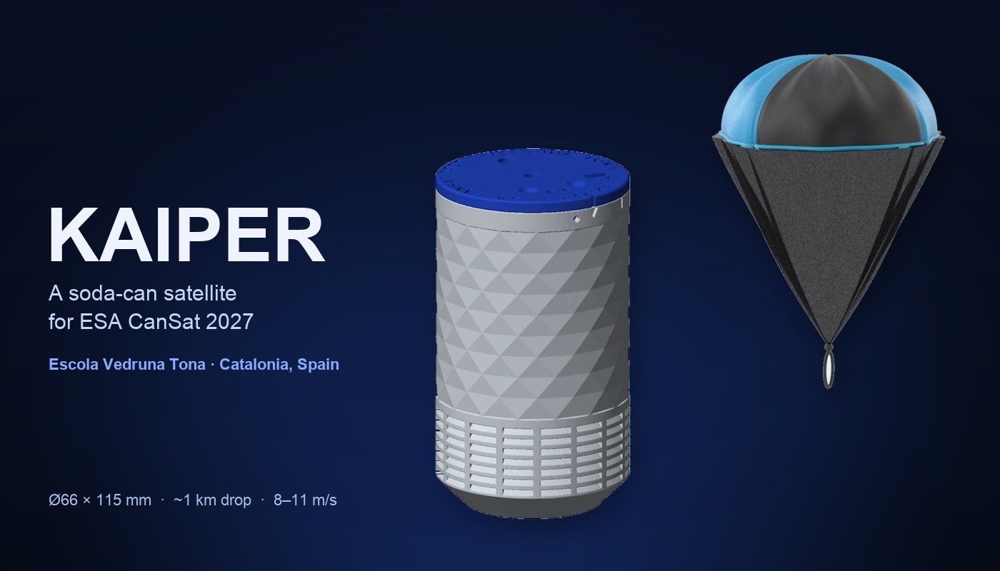
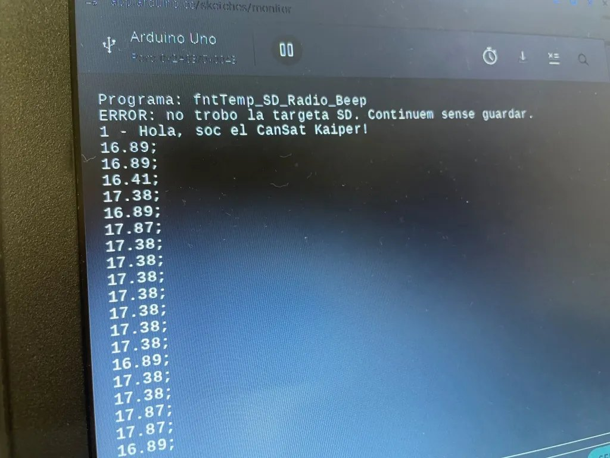
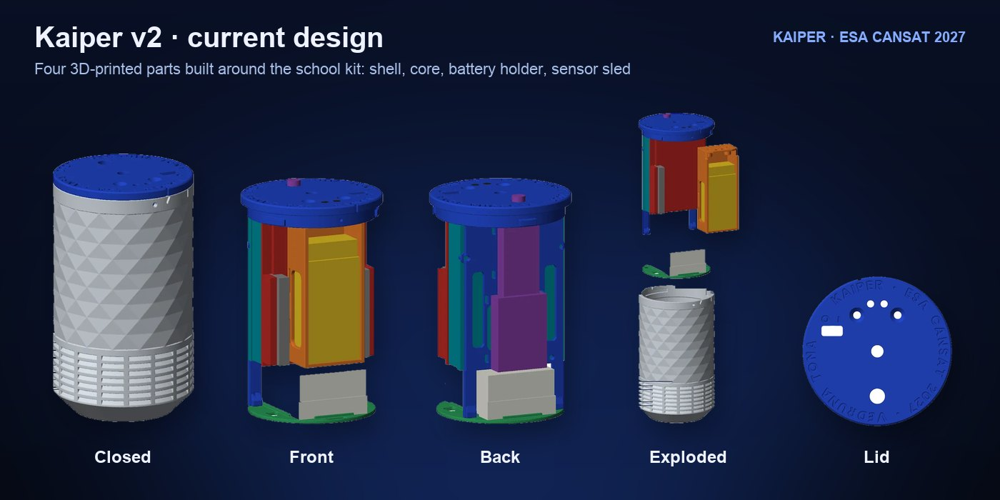
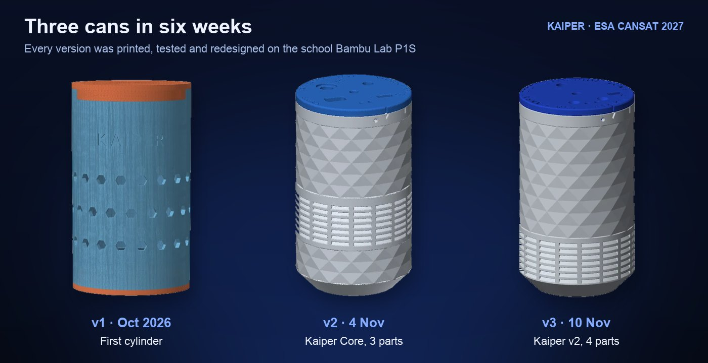
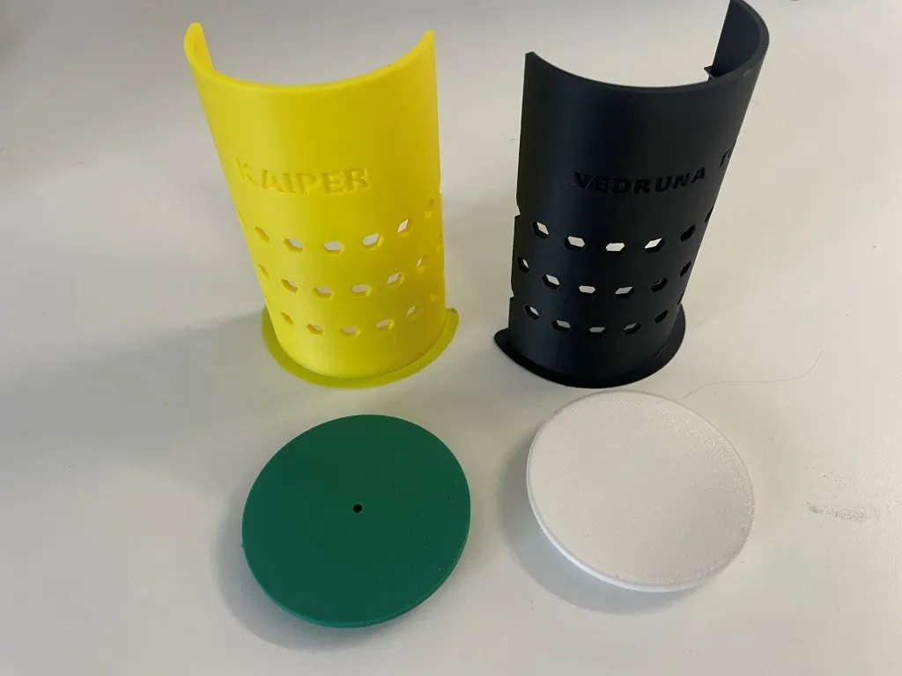
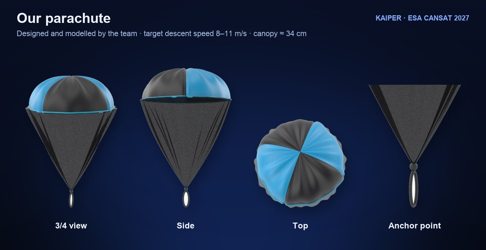
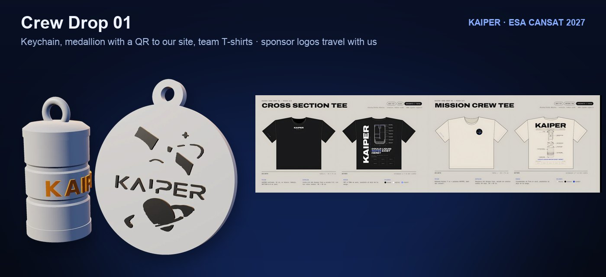
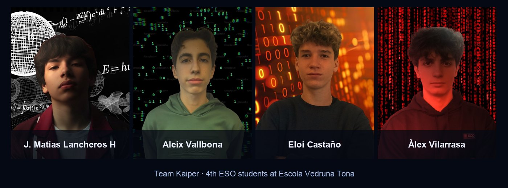
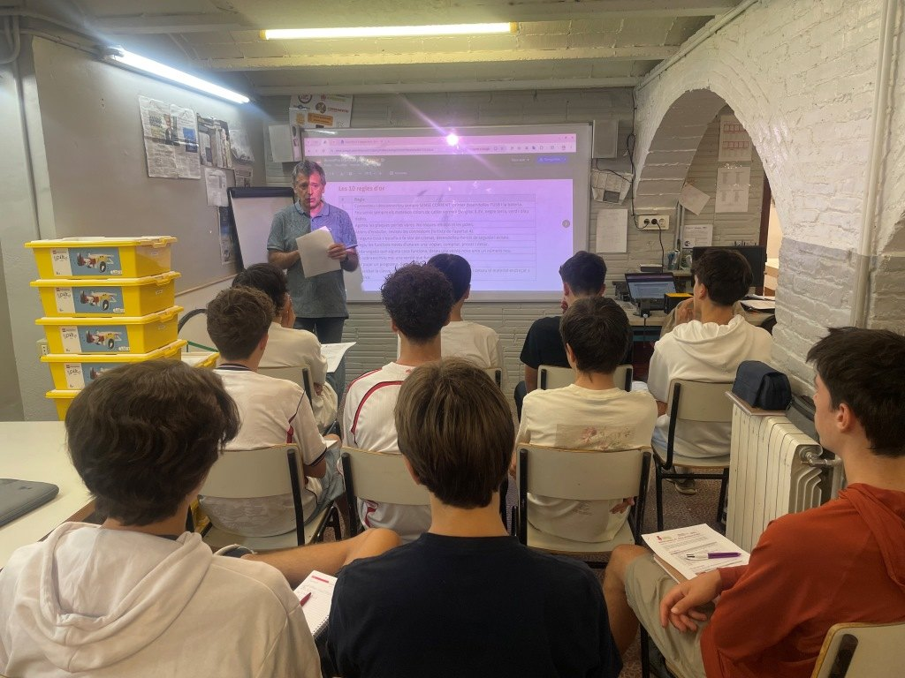

KAIPER
← Main site
KAIPER
← Main site
Project write-up · ESA CanSat 2027
Kaiper, a soda-can satellite for ESA's CanSat competition
We're Team Kaiper: Matias, Aleix, Eloi and Àlex, four 15-year-old students (4th ESO) from Escola Vedruna Tona, near Barcelona (Spain). We're building a CanSat for ESA CanSat 2027 (run in Spain by ESERO): a satellite the size of a soda can (Ø66 × 115 mm, 300–350 g) that a rocket launches to about 1 km. It falls back under its own parachute while it measures the air and radios everything to a ground station we built ourselves.

The name: "Kai" means ocean in Hawaiian, plus the Kuiper Belt, a region that may hide oceans under its ice. Our mission asks a similar question about the air Kaiper falls through: could liquid water exist here?
The mission
Primary mission (mandatory): measure air temperature and pressure from about 1 km down to the ground and send every reading by radio, second by second.
Secondary mission, the Kaiper Index: three layers of data on the way down.
- Habitability index: humidity, temperature and UV radiation combined into our own score for each stage of the descent.
- Turbulence map: an IMU tracks how rough the descent is, stage by stage, the same kind of data used to design parachutes and re-entry systems.
- Radiation shielding gradient: how background radiation changes with altitude. This is our honest question mark: the hardest sensor to source and calibrate at our level. If it doesn't make the final build, the mission still stands on the other two layers.
Electronics
Built around the school kit: Arduino Uno, a microSD shield (onboard backup of every reading), APC220 radio + GPS, BMP180 (pressure) and DHT (humidity and temperature), powered by a 9 V battery. We keep a version log of the base board:
- v01 (2 Nov): every practice that already worked, merged on one board. Our first signal on the serial monitor: "Hola, soc el CanSat Kaiper!"… and our first real bug: "SD card not found".
- v02 (in progress): adds GPS, radio communications, DHT and BMP180.

Mechanical design
Everything is modelled by the team and printed on the school's Bambu Lab P1S. The current can, Kaiper v2, has four parts designed around the real electronics:
- Shell: diamond facets on top and ventilation louvres below so air reaches the sensors.
- Core: lid and spine in one piece, engraved "KAIPER · ESA CANSAT 2027 · VEDRUNA TONA", with the SMA antenna connector and the power switch. Every board mounts on this central spine.
- Battery holder: holds the 9 V battery and the microSD shield.
- Sensor sled: the compartmented base for the breadboard and sensors.

It took three cans in six weeks to get here. Each version was printed, tested and redesigned from what failed in the previous one:


Parachute
We designed our own parachute to slow the can to the competition's 8–11 m/s target: a canopy of about 34 cm with black and blue gores, a reinforced hem, a mesh skirt and a single anchor point on the lid. Next step: drop tests to measure the real descent speed.

Ground station
We also wrote our own ground-station web app. It connects to the receiver over USB (Web Serial), plots every reading live and exports the whole flight to Excel.
Why we need PCBWay
Right now our electronics live on a breadboard with jumper wires: fine on a desk, risky under launch acceleration (around 20 g) and vibration. We want to replace them with a custom carrier PCB that connects the microcontroller, radio, GPS, IMU and sensors and mounts on the can's central spine, with locking connectors instead of loose wires.
- 5 carrier PCBs, 2 layers, about 50 × 70 mm, and, if possible, assembly of the connectors
- Designed in KiCad by the team
- Shaped to fit the 66 mm can and the core's mounting points
Like most school teams, our budget is small. PCBWay's support means we can go from a breadboard to a real flight board this season.
What we'll give back
- We'll publish the full design (KiCad files, Gerbers and 3D model) on PCBWay's community.
- PCBWay's logo is already on our website's sponsor section, and it will go on our can's cap and our team T-shirts.
- We'll post build updates tagging PCBWay on Instagram and TikTok (@kaiper.cansat).

The team

Sessions with our mentor, who works for ESA, shaped how we designed the mission and which questions are worth asking.
